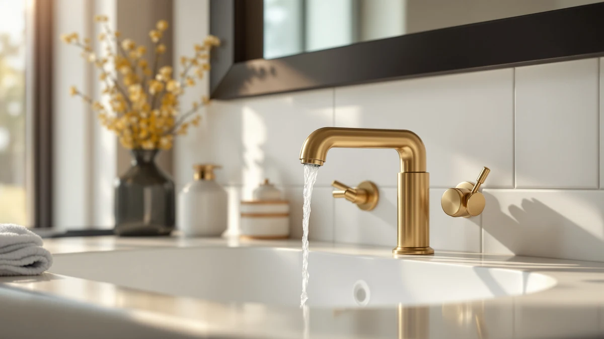

Things to Know Before You Buy
- Confirm the finish before you clean. Most brass faucets sold today, including the gotonovo set and the Aqua Vista pick in this guide, use a lacquer or PVD coating over the base metal rather than solid, uncoated brass. Abrasive pads or metal polish strip that coating in a single pass.
- White vinegar dissolves hard water spots safely on coated brass. Diluted vinegar left on the surface for more than five minutes can dull the finish, so rinse it off promptly once the deposits loosen.
- Daily upkeep prevents most tarnish. A 30-second wipe after each use keeps mineral deposits from building up, so the deeper clean described in this guide only needs to happen every two to four weeks.
- Skip bleach and ammonia entirely. Both compounds react with brass plating and can leave permanent discoloration that no amount of buffing will fix.
Knowing how to clean brass bathroom faucets properly starts with understanding what you're dealing with: real solid brass, or a thin brass-look coating over zinc or plastic. Most faucets sold today, including the picks in this guide, use a PVD or lacquer finish over a base metal, and that thin coating scratches if you attack it with anything abrasive. Check your product listing before you start, because the method for solid brass differs from the method for a plated finish.
This guide walks through five steps that work for both solid and plated brass, from a plain water rinse to a vinegar soak for stubborn mineral deposits. Skip the scouring pads and DIY polish recipes you'll find elsewhere, since they strip the protective coating that keeps a plated faucet looking new. Follow the order below and you'll clear soap scum, water spots, and light tarnish in under half an hour.
What You'll Need
- Supplies: mild dish soap, white vinegar, and baking soda
- Tools: a soft microfiber cloth and a soft-bristle toothbrush, the two tools you need to clean brass bathroom faucets safely
Step 1: Clear the faucet and rinse away loose debris
Start by clearing the counter around the faucet. Move soap dispensers, toothbrush holders, and anything else that blocks access to the base, handles, and spout.
Run warm water over the entire faucet for about 30 seconds. This first rinse loosens toothpaste splatter, soap residue, and loose dust before you apply any cleaner, and it keeps you from grinding grit into the finish during the next step.
If you're cleaning brass bathroom faucets that haven't been wiped down in a while, expect the water to run cloudy at first. That's normal, and it means the rinse is doing its job.
Step 2: Wash with warm water and mild dish soap
Mix a few drops of mild dish soap into a bowl of warm water. Dip a soft microfiber cloth into the solution and wring it out so it's damp, not dripping.
Wipe the spout, handles, and base in the direction of the finish, working from the top down. Rinse the cloth often so you're not redepositing grime you already lifted off.
This step handles the everyday buildup: fingerprints, soap film, and light dust. For faucets with heavier mineral deposits, soap and water alone won't fully clean a brass bathroom faucet, which is where the vinegar soak in the next step comes in.
Step 3: Soak away hard water spots with a vinegar solution
Mix equal parts white vinegar and warm water in a small bowl. Soak a cloth in the solution and press it directly against any white or chalky spots where hard water has dried on the surface.
Let the cloth sit for three to five minutes. Vinegar's mild acidity breaks down calcium and lime deposits without the abrasive scrubbing that scratches a plated finish.
Don't leave vinegar sitting on brass longer than five minutes, and never use it undiluted. Straight vinegar can dull a lacquered finish, and rinsing promptly protects the coating while you clean brass bathroom faucets this way.
Step 4: Scrub stubborn buildup around the base and handles
Mix baking soda with a small amount of water until it forms a thick paste. Load a soft-bristle toothbrush with the paste and work it gently into tight spots: the seam where the spout meets the base, the underside of the handles, and any threading around the aerator.
Use light, circular motions and check your progress every few passes. Baking soda is mild enough for daily plumbing fixtures, but pressing too hard in one spot can still wear through a thin coating over time.
Grime collects in these gaps faster than anywhere else on the fixture, so spending a few extra minutes here is worth it when you clean a brass bathroom faucet.
Step 5: Rinse, dry, and buff to a shine
Rinse the entire faucet with clean water to remove every trace of soap, vinegar, and baking soda paste. Leftover residue attracts new dust and can leave a hazy film once it dries.
Dry the faucet immediately with a clean microfiber cloth rather than letting it air dry. Air drying lets water evaporate on the surface and leaves new spots, undoing what you accomplished in the previous steps.
Finish with a light buff in circular motions. This last pass brings back the shine and leaves your brass bathroom faucet ready to use.
Common Mistakes to Avoid
The most common mistake is reaching for an abrasive pad or steel wool on a plated finish. Scouring pads scratch through the thin PVD or lacquer coating on most modern faucets, and once that coating is broken, the exposed metal underneath tarnishes faster than before.
A close second is mixing cleaners. Combining vinegar with bleach, or bleach with an ammonia-based glass cleaner, creates fumes you don't want in a small bathroom, and neither combination actually improves the result. Stick to one method at a time and rinse thoroughly between products.
Letting vinegar sit too long is another frequent error. Five minutes loosens hard water deposits; twenty minutes can dull the finish, especially on faucets with a thinner coating. Set a timer if you tend to get distracted mid-clean.
Skipping the dry-and-buff step causes problems too. Faucets left to air dry develop new water spots almost immediately, which means you're back to cleaning brass bathroom faucets again within days instead of weeks.
Finally, people often use the wrong tool for tight spaces. Fingernails and toothpicks can gouge a soft plated finish around the base and handles. Keep a soft-bristle toothbrush set aside for faucet cleaning only, instead of improvising with whatever's nearby.
Our Top Picks
If cleaning your brass bathroom faucet doesn't bring back the shine you want, or you're ready for a replacement, these three options cover a range of budgets and finishes.

Editor's Pick
gotonovo Shower Faucet Set with
A full shower valve and trim kit with a brass body, worth considering if you're replacing more than a sink faucet alone.
$69.99
Check Price on Amazon
Best Value
Aqua Vista Two-Handle Centerset Bathroom
A straightforward two-handle faucet for a standard 4-inch sink, priced for buyers who want function over extra finish options.
$39.99
Check Price on Amazon
Premium Choice
Moen Eva Brushed Nickel Two-Handle
A brushed nickel faucet from an established brand, a safe pick if you want widely available replacement parts down the line.
$163.99
Check Price on AmazonFrequently Asked Questions
How often should you clean a brass bathroom faucet?
Wipe it down after every use if you can, and do the full vinegar-and-baking-soda routine every two to four weeks depending on your water hardness. Homes with hard water need the deeper clean more often, since mineral deposits build up faster.
Can you use vinegar on a brass bathroom faucet?
Yes, diluted white vinegar is safe for most plated and solid brass faucets and works well on hard water spots. Keep the vinegar diluted, limit contact to a few minutes, and rinse it off promptly so it doesn't dull the finish.
What should you avoid when cleaning a brass bathroom faucet?
Skip steel wool, scouring pads, and abrasive powders, since they scratch through the thin coating on most modern faucets. Bleach and ammonia-based cleaners can also discolor brass, so keep them away from the fixture entirely.
How do you remove green tarnish from a brass faucet?
Green tarnish usually shows up on solid, uncoated brass that's been exposed to moisture for a long time. A baking soda paste applied with a soft-bristle toothbrush lifts most of it; if the tarnish is heavy, repeat the vinegar soak from step three before you scrub.
Is brass harder to keep clean than other faucet finishes?
Not if you stay on top of it. Brass shows water spots and fingerprints more visibly than matte finishes, but reviewers who own coated brass faucets consistently report that a quick wipe after each use keeps it looking new with less effort than chrome, which streaks more easily.
Verdict
Learning how to clean brass bathroom faucets comes down to matching your method to your finish and staying consistent. Rinse, wash with mild soap, soak stubborn spots in diluted vinegar, scrub tight seams with a baking soda paste, then dry and buff. That five-step routine handles both solid brass and the plated finishes on faucets like the gotonovo set featured above, and it takes less than half an hour once you've done it a couple of times.
Skip the shortcuts. Abrasive pads, undiluted vinegar left too long, and bleach-based cleaners cause more damage than the hard water spots they're meant to remove. A soft cloth, a soft-bristle toothbrush, and ingredients already in your kitchen are all you need.
If your faucet's finish is too far gone to bring back with cleaning alone, check the picks above for a replacement, and read our companion bathroom faucet buying guide before you buy.